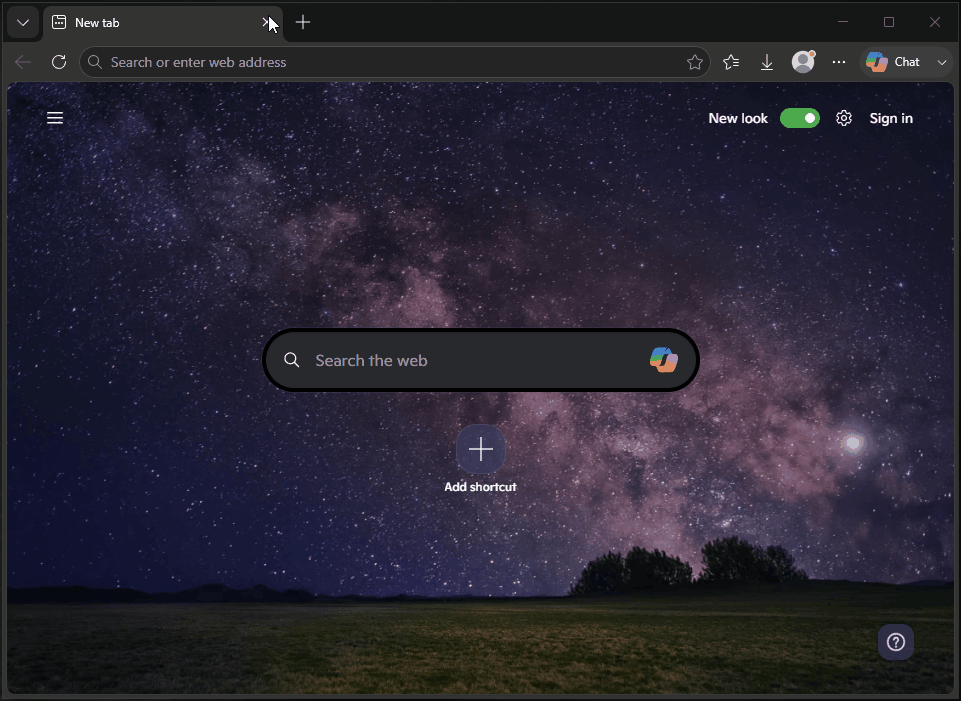

.html
Interactive HTML report
Open the report in your browser to browse the tree and search saved metadata.
- Virtual scrolling for long file lists
- Search by size or date (e.g.,
>10MB,<2023) - Expand/collapse entire folder levels
- Direct, clickable links to Drive items